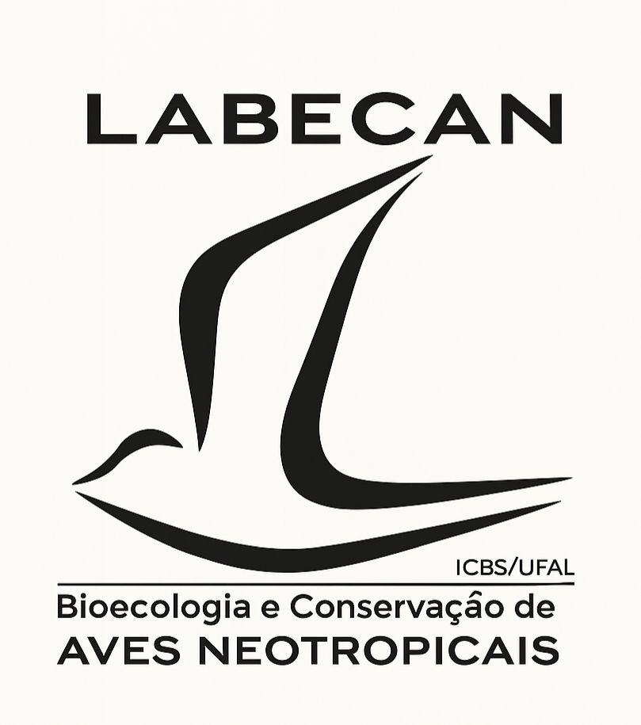

Bem-vindo ao Labecan
O Laboratório de Bioecologia e Conservação de Aves Neotropicais – LABECAN faz parte do Setor de Ecologia e Conservação do Instituto de Ciências Biológicas e da Saúde – ICBS da Universidade Federal de Alagoas – UFAL.
Foi criado em 2010 sob a coordenação do biólogo e professor Dr. Márcio Efe, onde são realizadas pesquisas com aves marinhas e florestais em temas da zoologia e ecologia, principalmente focados na construção de conhecimento sobre história natural, reprodução e conservação.
Desenvolve seus projetos em parceria com pesquisadores nacionais e internacionais nas ilhas brasileiras com aves marinhas e no Centro de Endemismo Pernambuco com aves florestais, dando prioridade às aves ameaçadas de extinção.
Conheça nossas pesquisas, projetos e ações para a conservação.
Entre em contato
Localização:
Av. Lourival Melo Mota,
S/N,Tabuleiro do Martins,
Maceió - AL,CEP 57072-900
E-mail:
marcio.efe@icbs.ufal.br
Telefone:
+55 82 9654-8560